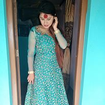
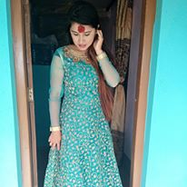

HOME PAGE ABOUT ME GALLERY CONTACT
ABOUT ME
Hello everyone, I am Shrestha Nira. I am From Nepal. I am new student at The Kyoto College of Graduate Studies for Informatics. It was always a great dream of mine to study and work in a foreign country and I am exciting that it will be become reality soon. I really want to come to Japan because I think that it is a most beautiful country and quality education with practically in worldwide. I enrolled in KCGI so that I can get as much as theoretical and practical knowledge regarding IT relating to Business. I am highly motivated and ambitious in pursuing my master's degree in Japan. By studying graduate program in japan, I hope to extend my vision and values which will also increase my Japanese language proficiency. After the completion of my graduation, I will return to Nepal and join with same business firm so that I can implement knowledge and techniques in business which I have learnt in KCGI. Your master program in Information Technology will enable me to achieve the goals I have set for myself. I except to have a long career in business IT field in my Country. In this way, I hope to add to the general development of my country's economy and become a leading business entrepreneur in coming future.
I would like to tell something about my family.
There are 7 members in my family. There are father, mother, 3 younger sisters, 1 younger brother and me. My father is a teacher, my mother is a businesswoman, my brother and sisters are student. My parents are friendly person and also helpful. I have a good relationship with my family.
I ama creative person thats why today I am student of KCGI. I am also intrested inall kinds of sports and for this reason I want to study technical college which offers the bright future.
I would like to tell my academic background.
I comleted schooling level from Kalika Himalaya Higher Secondary School in 2008.
I completed +2 level Kalika Himalaya Campus in 2011.
and I also complted bachelor level from Kalika Himalya Campus in 2016.
I have also work experience. I have worked at Kalika Multipropose cooperative private ltd. I have worked 6 years as a accontant.
 


picture source: google.com